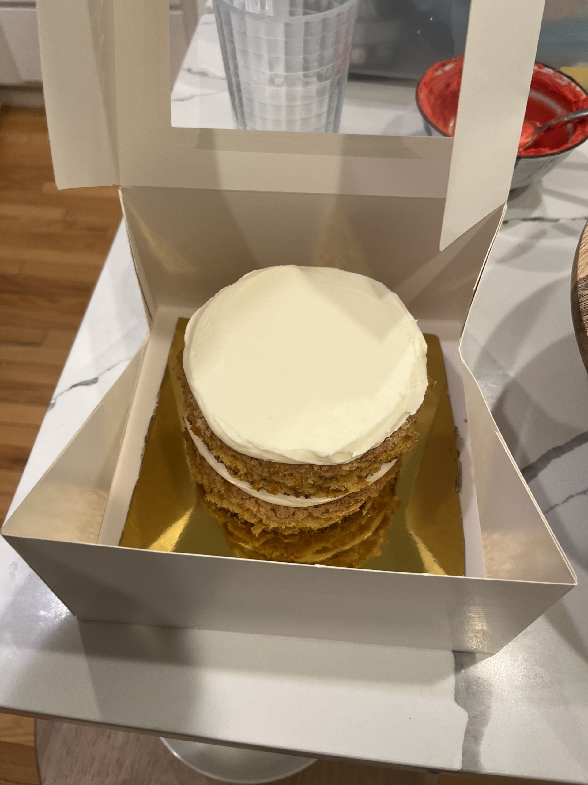

Carrot Cake
Ingredients:
Cake mixture: 2 cup sugar, 1 1/4 cup vegetable oil, 4 eggs, 2 tsp vanilla extract, 2 cup AP flour, 2 tsp baking soda, 2 tsp baking powder, 2 tsp cinnamon, 1/2 tsp salt, 3 cup grated carrots
Frosting mixture: 1/2 cup soften butter, 8 ounces soften cream cheese, 4 cups powdered sugar, 1 tsp vanilla extract
Step 1: Grease and flour a pan with parchment paper.
Step 2: Beat the sugar, oil, eggs, and vanilla with a mixer. Add in the flour, baking soda, baking powder, cinnamon, and salt. Stir in the carrots.
Step 3: Preheat the oven to 350 and bake for 40 minutes. Cool in the fridge for 2 hours.
Step 4: For the frosting, beat the butter, cream cheese, powdered sugar, and vanilla with a mixer until it's smooth enough to spread onto the cake.